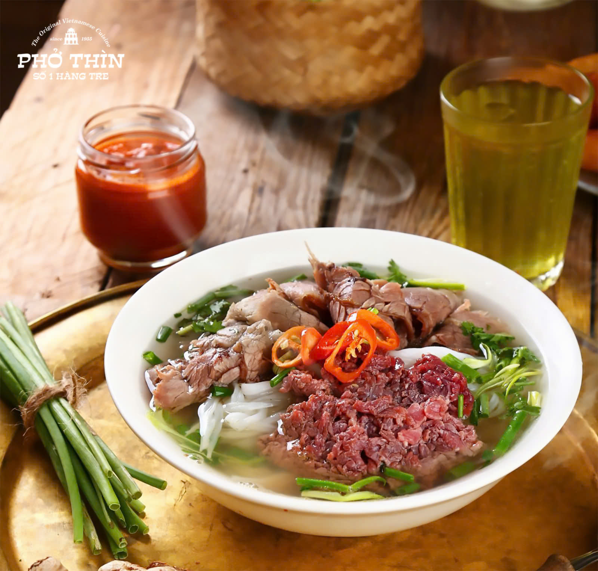

Pho Ha Noi recipe
Home

Description
Unless you’re from Vietnam you may not be aware that there are two main styles of Pho, the famous Vietnamese beef noodle soup. Most of what’s served in Vietnamese restaurants in America is Saigon Pho, the southern style. But there’s also a northern style known as Ha Noi Pho.
Ha Noi, more commonly spelled Hanoi, is the capital city of Vietnam and it is where Pho originated in the early 20th century. Of course, there are other styles of Pho, such as this Chicken Pho recipe, but Beef Pho, called Pho Bo in Vietnamese, is the main style of Pho.
Ingredients
- 6-7 pounds beef bones
- 6 quarts water
- 1 large onion or 3-4 large shallots
- 1 3-inch piece ginger
- 4-5 teaspoons dried shrimp
- 1 stick cinnamon
- 2-3 whole pods cardamom crushed to expose seeds
- 1 teaspoon fennel seeds
- 4-5 whole star anise
- 1 fuji apple
- 2-4 TBSPs fish sauce
- 1 pound beef raw, thinly sliced or shaved, for up to 8 people
- 1 package rice noodles flat
Garnishes and Seasonings, to taste
- 1 medium bunch cilantro leaves
- 1 medium bunch mint leaves
- 1 medium bunch Thai basil leaves
- 4-6 Green onions, thinly sliced
- Garlic vinegar
- Fish sauce
Steps
- Get about six to seven pounds of beef bones, add them to your stock pot, add filtered water to cover (about 6-7 quarts) and bring the water to a boil. Skim off any scum that rises to the surface and reduce the heat to a gentle, slow simmer.
- Cut the onion or shallots in half. Slice unpeeled ginger in half lengthwise. Char ginger and onion on a grill, gas stovetop or by broiling in the oven. Watch closely, turn on occasion and remove from the oven after about 10-15 minutes. Once charred, remove from the heat for a few minutes to let them cool. Remove the outer skin from the onion/shallots and peel the ginger. Remove any blackened pieces and add them to the beef broth.
- Add dried shrimp, cinnamon, star anise, fennel seeds and cardamom pods. Cover and keep the broth gently simmering for four to six hours.
- Take one fuji apple and peel and core it. Slice it up into chunks and add it to the broth.
- Strain the broth and if using right away, season with 2 TBSPs fish sauce. Add up to 2 TBSPs more, to taste. If not using right away, cool and store the broth in the fridge and season with fish sauce upon reheating.
- Thinly slice the raw beef and set aside.
- Prepare rice noodles according to package directions.
- Prepare the garnishes and seasonings. Chop herbs coarsely or simple place whole leaves in bowls for individual garnishes. Place fish sauce and/or garlic vinegar in small condiment bowls.
- Place rice noodles in individual bowls, place raw beef (or other types of beef) on top and ladle over with hot broth. Add herbs and seasonings, to taste.
Nutrition
Serving: 2cups (1 bowl) | Calories: 279kcal | Carbohydrates: 29g | Protein: 13g | Fat: 12g | Saturated Fat: 4g | Polyunsaturated Fat: 0.4g | Monounsaturated Fat: 5g | Trans Fat: 1g | Cholesterol: 68mg | Sodium: 213mg | Potassium: 230mg | Fiber: 2g | Sugar: 3g | Vitamin A: 16IU | Vitamin C: 3mg | Calcium: 64mg | Iron: 2mg